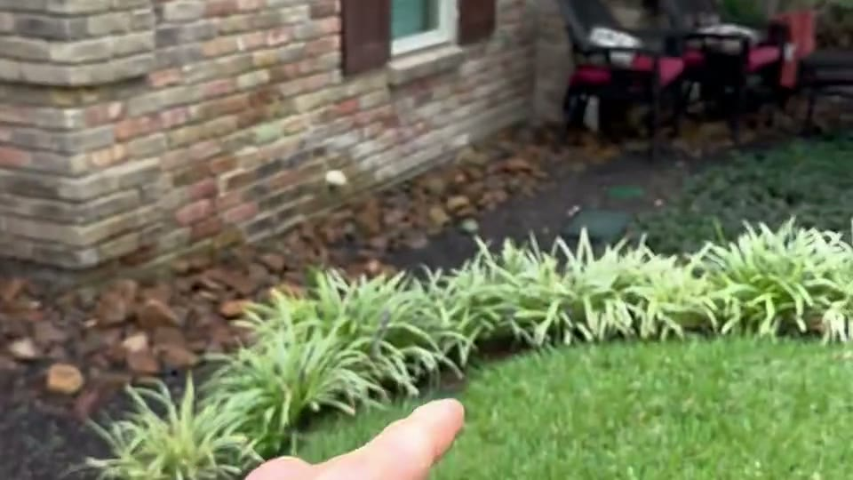
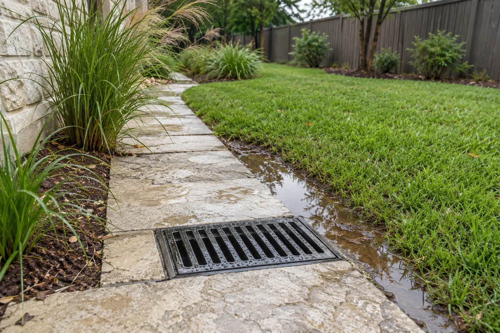

Free public beta
Good work starts
with a clear picture.
Built for landscape, drainage and hardscape site visits. Bring your own logo, scope templates and rates—from the first photo to a branded customer report.
No signup. No subscription. No card required.
Real app demonstration · Sample scope, quantities and prices
From the first photo to the proposal
Less piecing it together.
More moving the job along.
A free contractor estimating app for drainage, irrigation and landscape work. Follow one practice project through the workflow.
Start with what you see.
Add site photos and notes. Mark the details that need a closer look.
Try it in the free appInteractive preview. Fictional project details.

Water beside walkwayAI-generated illustrationExisting conditions, before the work begins.
Your next job.
Already in your pocket.
Start in your browser, without an account.
Local projects. Separate backups.
Estimate Cam saves your work in this browser on this device. There’s no cloud backup or device sync.
Export a backup regularly, especially before clearing browser data or moving to another device. Losing your device or clearing its data can remove your projects.
Open backup settingsAI is optional. You choose your provider; provider charges may apply. The core photo, scope, estimate and report workflow works without it.
Practical field guides
Make the next handoff easier.
A little structure goes a long way when it’s time to explain the work.
Build a photo report
that tells the story.
Choose useful photos, add context and organize a report your customer can follow.
Read the photo report guideCheck the details
before you send.
Review scope, quantities, rates and exclusions before sharing an estimate.
Read the estimate checklistA few things to know
Before your
first project.
Is Estimate Cam free?
The public beta is free and open source. No signup, subscription or card is required. Optional AI uses your chosen provider, which may charge separately.
What can I include in a contractor report?
Organize job photos and notes, describe the scope and exclusions, review your estimate and export a customer report with your business branding. You supply and review the quantities and rates.
Where are my projects saved?
In this browser on this device. There is no cloud backup or device sync. Export a separate backup before clearing browser data or changing devices.
Do I need AI to use the app?
No. The photo, scope, estimate and report workflow can be used without an AI provider. If you enable a provider, the selected feature sends its inputs to that provider. Browser dictation may send audio to its speech provider.
Take it on a practice run.
Add a nonsensitive photo. Write a scope. Review an estimate.
Then tell us what you’d need for your next real job.
Feedback is public on GitHub and requires an account. Leave out customer details, job photos, addresses, passwords and API keys.
Help improve the beta Optional usage analytics
Privacy & usage analytics
Help improve Estimate Cam by sharing which screens and features you use with PostHog. This is optional and off by default. Usage analytics never includes your job content.
Sends feature event names and a random browser identifier. Never sends job names, customer details, addresses, GPS, photos, videos, notes, transcripts, prices or API keys. No session recordings. You can turn this off here at any time; previously sent events are not deleted.
Usage analytics is unavailable in this installation.